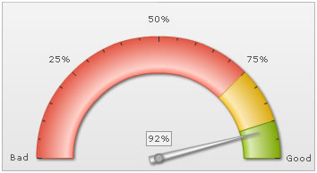
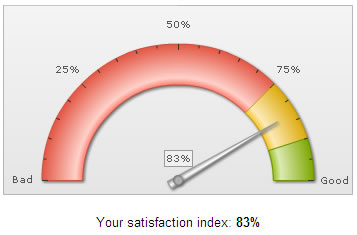

Angular Gauge > Edit Mode |
The angular gauge in FusionWidgets v3 suite can also act as an input control, allowing users to visually drag & change the value of dial. Once the value is updated, it can be retrieved from the chart using client side JavaScript. Here, we'll see how to do the same. |
| Setting the chart to register with JavaScript |
First, we need to register the chart with JavaScript by setting registerWithJS flag to 1, as under. This is required because we'll need to retrieve the chart's update value using JavaScript. (Note the last parameter set as 1) |
| var chart1 = new FusionCharts("AngularGauge.swf", "ChId1", "350", "190", "0", "1"); |
| Setting editMode to 1 |
Next, we need to tell the chart to switch the edit mode on. This can be done either at the global level using: <chart ... editMode='1' ..> This makes all the dials present on the chart editable. Or, you can make individual dials editable using: <dial ... editMode='1' ..> This enables the particular dial to be editable. The user can now drag and rotate that dial to change its value. |
| JavaScript Event & Retrieving value |
Once the user has changed the value of the gauge, the chart automatically calls FC_ChartUpdated(DOMId) JavaScript function. You'll have to define this method in your HTML page and then write JavaScript code to retrieve the data using getData(index) or getDataForId(id) method. Let's quickly see an example. |
| An Example |
We'll build a simple example to let the user choose his satisfaction % using an angular gauge chart. Once he has selected the value, we'll simply display it within the HTML page. In your real-life application, you could use the return value to assign to a hidden form field and then submit the form to server side scripts for processing. The chart will use the following XML: |
<chart lowerLimit='0' upperLimit='100' lowerLimitDisplay='Bad' upperLimitDisplay='Good' gaugeStartAngle='180' gaugeEndAngle='0' palette='1' numberSuffix='%' tickValueDistance='20' showValue='1' decimals='0' editMode='1'> |
| Here, we've defined 1 editable dial (with ID as CS). When you run this chart, it will look as under: |
|  |
Let's now look at the HTML + JavaScript code required to retrieve data from this dial when user changes the value. We create an HTML page with the following code. This page is present in Download Package > Code > AngularGauge > EditMode.html |
<HTML> |
Here, we're:
When you run this example, you'll get the following result (after changing dial value): |
|  |
Instead of getData(index) method, you can also use getDataForId(dialId) method to retrieve dial's value as under: var dialValue = chartRef.getDataForId("CS"); Here, CS was the dial ID we had specified in XML. So, you just saw how easy it is to create editable angular gauges using FusionWidgets. |